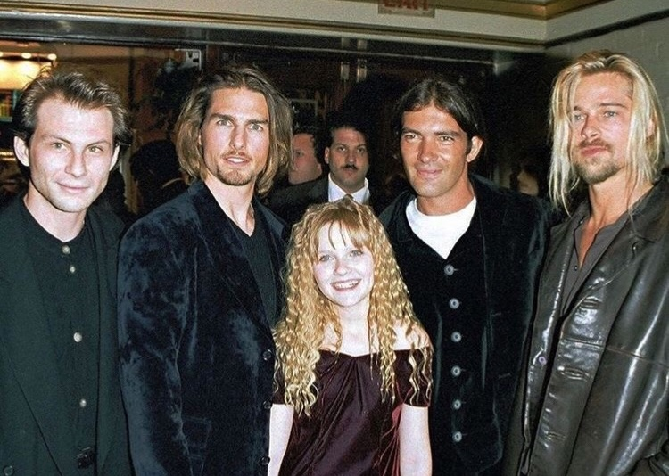
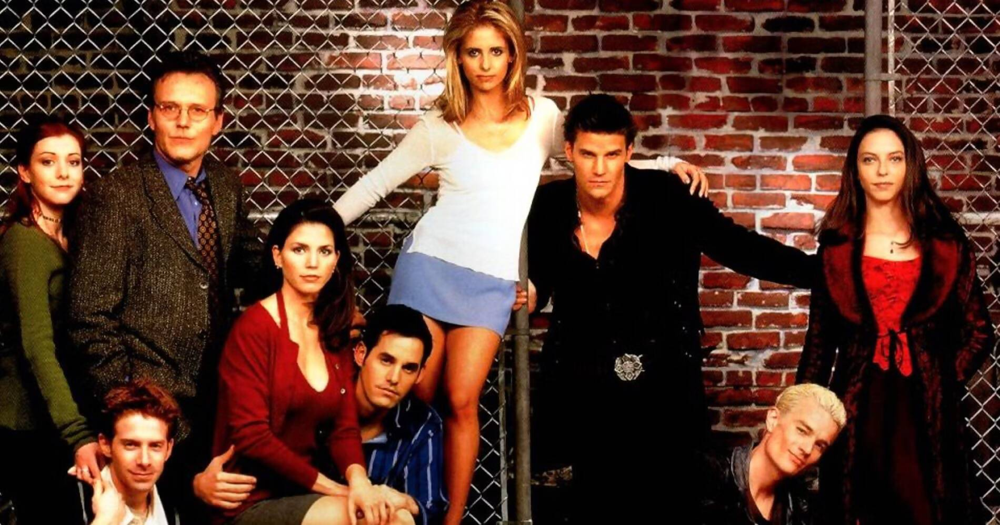
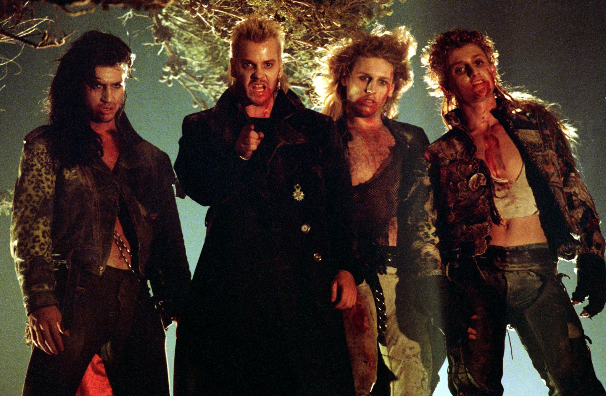
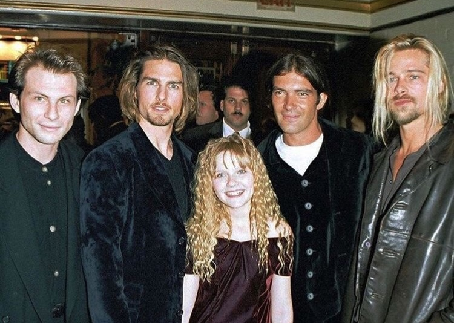
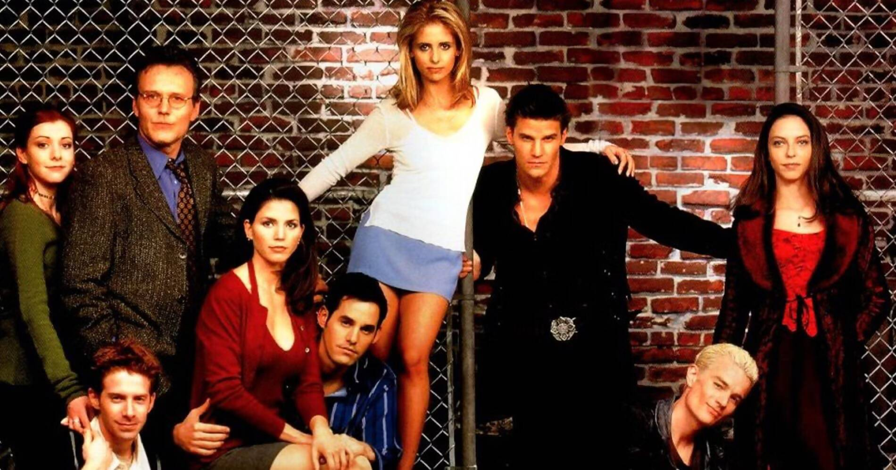
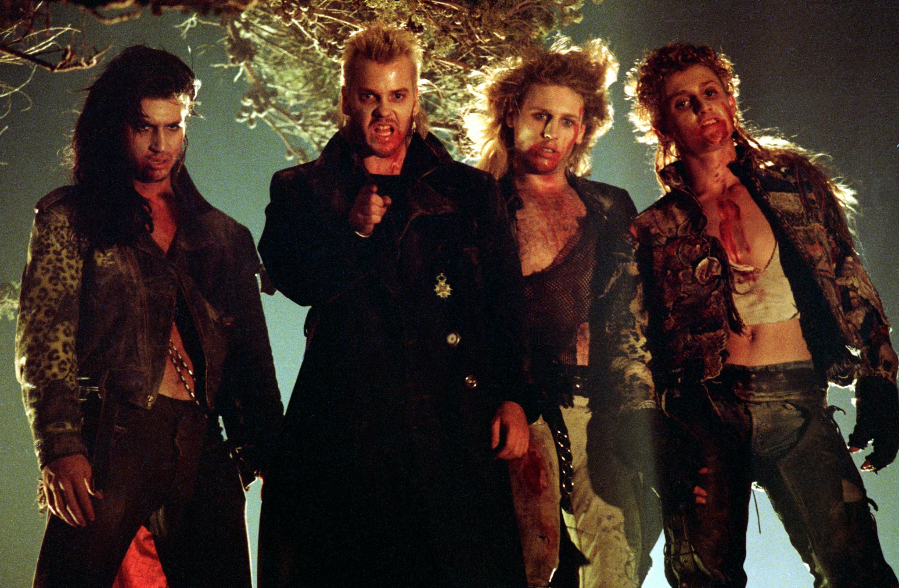

🚪 door 5 of the spell 🚪
"vampires"
gm, my bloody anon
today's an interlude so we'll take it easy
(a brief slowdown to enjoy the bliss)
(and prepare for what is to come)
today's task is to think about the following question:
is there anything in the world you'd risk your life for?
an idea? a person(s)? a dream? a community? a choice?
an honest answer might surprise you...
(and this inquiry is essential for tomorrow's work)
meanwhile... indulge yourself with our 2025 edition of
the top 19 most delightful vampire flicks of all time:
wishing you a frightfully zen day 🧛🏼♀️🩸
the top 19 most delightful vampire flicks of all time:
- Interview with the Vampire (1994), by Neil Jordan
- Nosferatu (1922), by F.W. Murnau
- From Dusk Till Dawn (1996), by Robert Rodriguez
- The Lost Boys (1987), by Joel Schumacher
- Bram Stoker's Dracula (1992), by Francis Ford Coppola
- Let the Right One In (2008), by Tomas Alfredson
- 30 Days of Night (2007), by David Slade
- Dracula (1931), by Tod Browning
- Nosferatu the Vampyre (1979), by Werner Herzog
- Cronos (1993), by Guillermo del Toro
- Daybreakers (2009), by Michael Spierig && Peter Spierig
- Thirst (2009), by Park Chan-wook
- Only Lovers Left Alive (2013), by Jim Jarmusch
- What We Do in the Shadows (2014), by J. Clement && T. Waititi
- Horror of Dracula (1958), by Terence Fisher
- Dark Shadows (2012), by Tim Burton
- Vampires (1998), by John Carpenter
- Stake Land (2010), by Jim Mickle
- Buffy, The Vampire Slayer S1 (1997), by J. Whedon
wishing you a frightfully zen day 🧛🏼♀️🩸
 






← back to the countdown